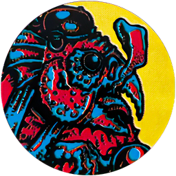

VISIONS AT THE PEAK
The mountains beckon!
SETUP
Got the Fungal Parasite Loot Card
| ĝ Lord Scrott (Epic Monster) The bird king waits in his throne room for devoted subjects bringing offerings from the world below in exchange for his gift of transformation! |  |
If you have more than 16 Encounter cards for a Region (additional Encounters are available in booster packs), this can affect the difficulty of this mission. To prevent this, make sure to include the following cards in each encounter deck, then remove any excess cards until each deck has a total of 16 cards:
| Encounter deck | Required cards |
|---|---|
| Badlands | Scrag Milker |
| Highlands | Alchemist |
| Lowlands | Truffle Hunter |
| Wetlands | Scrog Spiker, Swamp Hag & Weed Wizard |
OBJECTIVE
At least one adventurer must travel to the Temple of Madness & Rest there (remember that you must have a status condition or Disease to enter a Metaphysical space). When you do, you must face Lord Scrott (see Facing Lord Scrott, below) & either pledge yourself to him or destroy him!
If an adventurer has the Fungal Parasite, the mission cannot be completed until that adventurer (the fungal host) Rests at the Temple of Madness. Lord Scrott will not appear until the fungal host is present. If the fungal host is cured (if the Fungal Parasite has been discarded) during the course of the mission, Lord Scrott becomes quite displeased & will not accept any offering!
SCORING DRUGS
It is said that only true sorcerers can travel to the Temple without the aid of certain mindbending substances & obscure rituals to alter the pilgrim's perception of reality. Many such substances are available for sale throughout the Borderlands to those who know where to look.
When you find any of the Encounters on the list below & interact with them in the indicated manner, you may search the Loot deck & discards for the corresponding Item & you may purchase that Item for normal cost.
| Encounter | Item |
|---|---|
| Alchemist (Approach) | Mystery Pills |
| Scrag Milker (Drink) | Scrag's Milk |
| Scrog Spiker (Approach) | Eye of Scrog |
| Swamp Hag (Approach & roll 5 or more) | Magic Mushroom |
| Truffle Hunter (Approach) | Scratch |
| Weed Wizard (Approach) | Marsh Moss |
FACING LORD SCROTT
As you explore the spiralling labyrinthine corridors of the Temple, the clinking footsteps of the bird-king's ceramic feet echo across the strangely glistening walls. The sweel scent of the wafting Nacht Mist envelops the chamber & Lord Scrott appears, towering above you & gibbering like a mad parrol or a living God!
If you have the Fungal Parasite, you hear Lord Scrott's glorious litany & it resonates with the voices in your mind. You know you stand now belore your true sovereien & that you must go forth & share his gifts with the world!
When you Rest at the Temple of Madness, place the Lord Scrott counter there. At the start of the Encounter Phase, you may attempt to pay tribute to him by presenting a symbolic offering; the fungal host (or any adventurer, if there is no fungal host) must discard an Ally or Food, Herb, Relic, or Alchemical Item, then make a MAG Test. If you offered a Relic, you may roll 3 dice & use any 2. If you pass this Test, your offering is successful & your mission completed! If you fail, Lord Scrott rejects your pathetic tribute & you must fight & destroy him as your mind clears & you witness the true horror that surrounds you!

REWARD
Each adventurer gains 1 Luck Ğ & remove 2 yellow Doom ğ counters from the Doom track (Doom cards remain in play).
If you destroyed Lord Scrott, increase the Town Level at Pigskin Port & the Bandit Camp & you may take the Psychic Warrior Trait.
If you made a Successful Offering (by passing a MAG Test), you may take the Servant of Lord Scrott Triumph card.
If you are packing up the game, make a note of any Status Conditions you have on your Adventurer Record Sheet. Begin the next Mission with these Status Conditions.
MISSION PATH
You destroyed Lord Scrott
As the bird king's body sinks to the quivering floor, his wounds form growing pools of stinking blight-mold. As these pools seep into the ground, new & bizarre forms rise & twist in the air before your eyes. You realize this place must somehow be the source of the terrible blight devastating the Highlands! Armed with this knowledge you resolve to do what you can to İCleanse the Blight.
You made a Succesful Offering
You rejoice in Lord Scrott's favour & he bids you go forth to share his gifts throughout the Borderlands. You must visit the realms of mankind & do your part to İSpread the Blight.
Lord Scrott rejected your Offering
Having vanquished the avian horror, your thoughts begin to clear & you realize your mind has been clouded & confused by some unseen & omnipresent sentient force. Determined to prevent the Highlands from falling under its spell, you swear to İCleanse the Blight from the countryside once & for all!